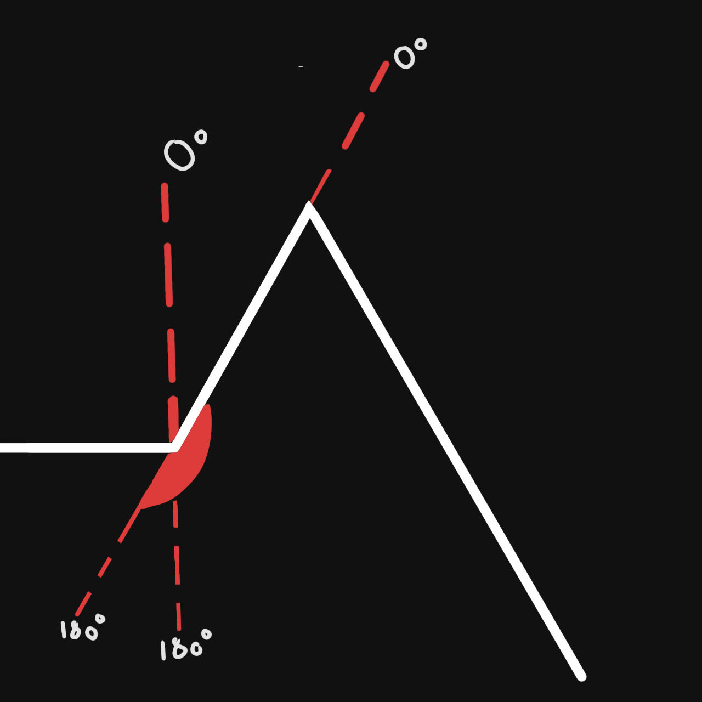

La cinématique inversée pour robot hexapode
h : La distance entre le corps du robot et le sol
h = 8 cm
exp : Distance, expansion de la patte
exp = 12 cm
hyp = √(h² + exp²)
hyp = √(8² + 12²)
hyp ≈ 14.42 cm
Résolution de la valeur inconnue grâce à Pythagore

Une fois que nous avons trouvé la valeur, nous pouvons chercher les angles des servo-moteurs.
Les angles et servo-moteurs
Les servo-moteurs sont limités à un axe de 180°.
L'angle tracé en rouge fait 180°, donc les angles que peut atteindre le servo-moteur. Nous allons nous en servir pour récupérer les angles recherchés.
Le Théorème d'Al Kashi
Le Théorème d'Al Kashi permet de calculer un angle grâce à la longueur de chaque segment du triangle.
Calcul des angles
cos(θ) = (h² + hyp² - exp²) / (2 * h * hyp)
cos(θ) = (8² + 14.42² - 12²) / (2 * 8 * 14.42)
θ ≈ 56.3°
La valeur que nous cherchons est alors 56.3°. Cette formule nous permet de déterminer les angles marqués en rouge et vert.